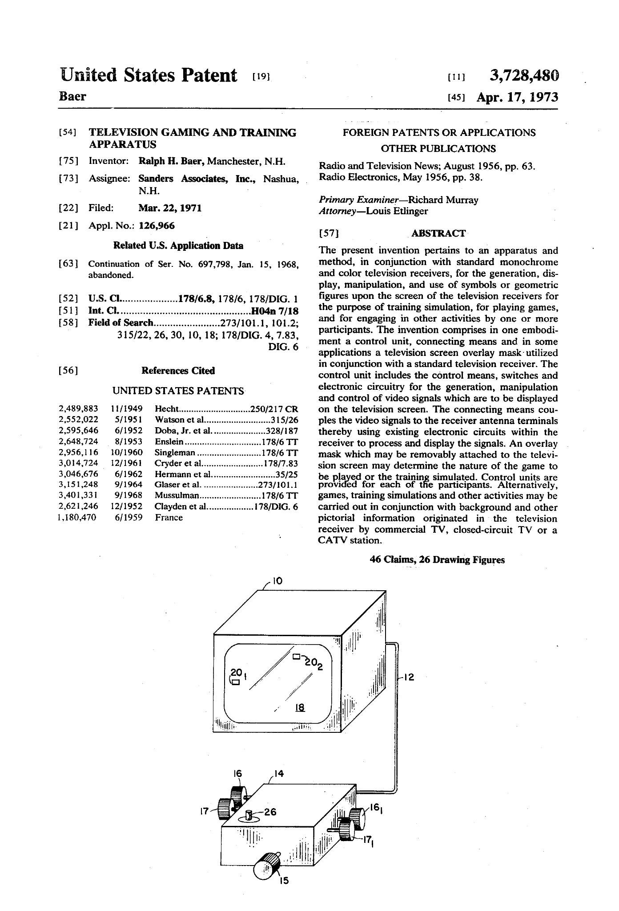
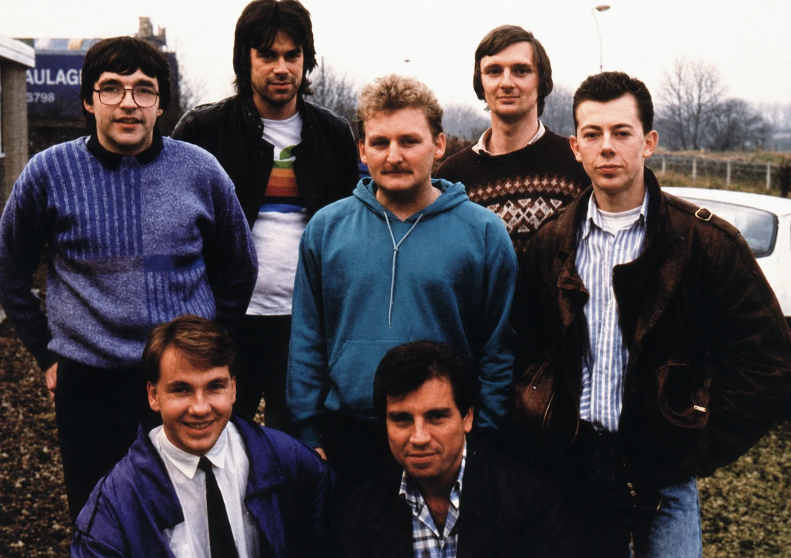
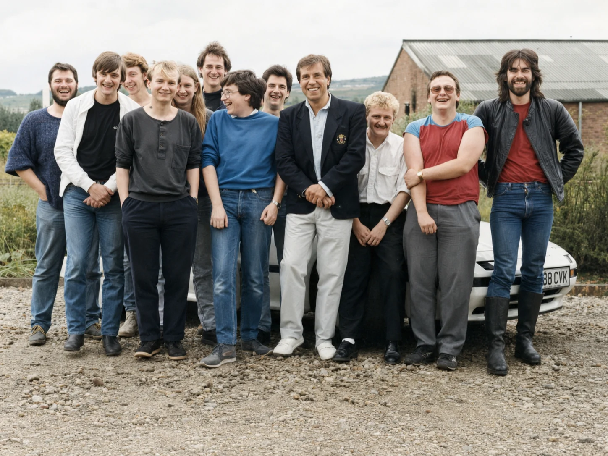

OXOXOXO
1952 · Cambridge
OXO
A graphical computer game on EDSAC. The player used a telephone dial; the machine replied on a specialist CRT.
Newcastle University · A personal, regional and technical history
How screens became games, homes became studios, and code became a North East business network.
The North East games industry did not begin as one studio or one uninterrupted company lineage. It emerged as a network of programmers, artists, publishers, schools, clubs, machines, contracts and commercial relationships. Knowledge moved between companies even when the companies themselves did not.
The opening argument
Electronic play, computer play, public play, raster video, home consoles, arcade machines and commercial industries begin at different moments. OXO, Tennis for Two and Spacewar! are not failed claimants to a single crown. They are genuine early games that answer different historical questions.
Phase 0 argument: video game history becomes clearer when we trace thresholds: display, interaction, access, programmability, reproduction, distribution, ownership, and revenue.
Origins of Digital Play
The story keeps OXO, Tennis for Two, Spacewar!, Ralph H. Baer, William Rusch, William Harrison, the Brown Box, Magnavox Odyssey, Computer Space and Pong in view without forcing them to be the same kind of first.
1952 · Cambridge
A graphical computer game on EDSAC. The player used a telephone dial; the machine replied on a specialist CRT.
1958 · Brookhaven
A deliberately entertaining public exhibit using an analogue computer and oscilloscope trace.
1961-62 · MIT
Real-time simulation, competition and shared program culture on a PDP-1 point display.
1966-72 · Sanders / Magnavox
A control unit built around the raster-scan television already in the home, with player-controlled symbols, hitting, coincidence and response between objects.
The pioneer-patent distinction
Earlier systems prove that people could play on electronic displays. The pioneer patents focus on a different problem: a commercially useful apparatus for making player-controlled symbols on an ordinary raster-scan television. The distinction is technical, legal and commercial, not a dismissal of earlier games.
Computer Space then took arcade shape through Nolan Bushnell, Ted Dabney and Nutting Associates. It was commercially derived from the ideas demonstrated by Spacewar!, but the sculptural cabinet was Computer Space, not Spacewar! itself.

Britain Switches On
The UK boom was not one machine or one heroic founder. The ZX80, ZX81, BBC Micro, Acorn Electron, ZX Spectrum and Commodore 64 created overlapping routes through homes, schools, clubs, magazines, shops and mail order. Clive Sinclair stays central because price changed access, but access also came through the BBC Computer Literacy Project and school computing.
Low cost, television connection, high-street availability and BASIC as the owner's first screen.
Educational credibility, school provision, BBC television, robust expansion and a strong Acorn software market.
Strong graphics and sound, a different retail culture and a reminder that Britain was not only a Sinclair story.
BASIC was resident in ROM, so switching on many home micros invited the owner to type. The path from player to maker moved through PEEK, POKE, USR, DATA, CLEAR, SAVE CODE, loaders, assemblers, listings and cassette experiments.
The Spectrum screen made constraints visible: 6,912 bytes of display memory, made of 6,144 bitmap bytes and 768 colour-attribute bytes, produced distinctive colour-attribute constraints that game authors had to design around.
Code travels on paper
Magazines, books, newsletters, clubs, libraries, cassette swapping and friends made code mobile. A listing could be a program, programming lesson, installation, debugging exercise, modifiable source code, route into game design and bridge from player to developer.
10 REM CODE TRAVELS ON PAPER
20 LET X=15
30 PRINT "TYPE O OR P"
40 LET K$=INKEY$
50 IF K$="O" THEN LET X=X-1
60 IF K$="P" THEN LET X=X+1
70 PLOT X,10
80 GOTO 40READY.
Press RUN to begin
The North East Network, c. 1981-1995
Do not force modern studio terminology onto the early 1980s. The record uses individual author, bedroom programmer, freelance programmer, software house, publisher, budget label, in-house team, conversion team, regional office and modern development studio for different things.
A named person could sell or license work without being a company employee.
A business turning programs into products, sometimes through in-house work, sometimes through contracted authors.
A route to duplication, packaging, advertising, reviews, mail order or retail; often outside the region.
Knowledge moving through people after closure, acquisition or new company formation. It is not legal succession.
Regional geography
The schematic map uses approximate positions for Newcastle, Gateshead, Blaydon, Sunderland, Durham, Chester-le-Street, Stockton and Middlesbrough. It avoids commercial mapping APIs and makes uncertain premises visible.
Choose a place to see related organisations and evidence.
Case study · Tynesoft
Tynesoft gives the North East story a tangible production chain: Blaydon, North East, educational software, games and publishing, cassette duplication, artwork, retail, licences, reviews and multiple incompatible 8-bit computers.


Data-driven timeline
Every event exposes evidence and sources. Use the filters to move between global origins, UK context, North East, company, people, games, technology, business, confirmed and uncertain material.
Choose an event on the timeline.
Legal lines and staff-flow lines
Solid lines show legal succession, renaming, acquisition or ownership. Dashed lines show staff, founder or skills heritage. Amber publication lines show publishing, commissioning or licensing relationships.
Choose a line or node to inspect the evidence.
Organisation profiles
Each profile records verified name, type, place, active dates, platforms, role, evidence label, sources and unresolved questions.
People and practice
The purpose here is technical contribution, collaboration, education, publishing relationships, company formation and transfer of skills. A game credit alone does not prove employment.
Britain Was a Network Too
Superior Software, Audiogenic, Micro Power and other publishers matter because they connected North East authors to national markets. They should not be quietly relabelled as North East companies. Cambridge, Leeds, Sheffield, Manchester, Liverpool, the Midlands, Dundee and the South East belong in comparison, not inside the regional boundary.
The Lines Continue
Later names including Eutechnyx, Ubisoft Reflections, Rage Newcastle, Venom Games, Pitbull Syndicate, Midway Newcastle, Atomhawk, CCP Newcastle, Sumo Newcastle, Coatsink, Double Eleven, Nosebleed Interactive, SockMonkey / Behaviour UK and ZeroLight are used to show skills, staff movement, acquisitions, closures seeding new teams and diversification into adjacent sectors.
Public research status
The public site is intentionally transparent about uncertainty: disputed relationships, missing archival material, uncertain dates, photograph provenance and oral-history opportunities remain visible.
Phase 0 conclusion
Phase 0, in one sentence: affordable raster displays, programmable home computers, a culture of shared code and regional networks turned electronic play into a British industry.
Next · Phase 1
This is only a short preview. Newcastle University records that Graham Morgan created and leads video game engineering activity at Newcastle, with Game Lab connecting teaching, research and industry. The next phase will trace the rooms, machines, people and research relationships that made the lab real.
Evidence and further reading
The source catalogue distinguishes patents, institutional histories, contemporary magazine material, first-person testimony, incoming research leads and private CSC3224 teaching archive items.
Ralph Baer portrait: Michael Schilling, CC BY-SA 3.0. Magnavox Odyssey product photograph: Evan-Amos, public domain. US patent drawing: public-domain patent record. Newcastle CRT hero: generated artwork created for this project. Tynesoft team photographs: supplied by Graham Morgan for this living history; names, dates, and detailed provenance are still being researched.